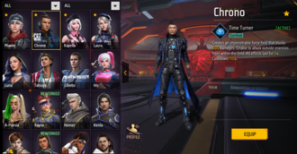

Free Fire offers over 15 game modes, including Team Deathmatch, Clash Squad, Big Head, Explosive Jump, Cold Steel, Zombie Hunt, Rampage, and Pet Mania.[11] However, modes other than Battle Royale,

| In September 2021, Garena launched Free Fire Max, an enhanced version featuring improved graphics, lighting, and sound effects.[7] The game’s official annual esports competition, the Free Fire World Series, set a record as the most-watched esports event at the time, reaching over 5.4 million peak live viewers. | Free Fire offers over 15 game modes, including Team Deathmatch, Clash Squad, Big Head, Explosive Jump, Cold Steel, Zombie Hunt, Rampage, and Pet Mania.[11] However, modes other than Battle Royale, Clash Squad, and Lone Wolf are only available during special event | 
Free Fire offers over 15 game modes, including Team Deathmatch, Clash Squad, Big Head, Explosive Jump, Cold Steel, Zombie Hunt, Rampage, and Pet Mania.[11] However, modes other than Battle Royale, |
|
| Garena focused on keeping the game's app size small, ensuring smooth performance even on less powerful devices and slower internet connections, which was crucial for reaching emerging marketsEach round is won when all players from one team are killed, either by their opponents or through environmental factors. As of 2022, same as those in Battle Royale mode. The mode can be played as either Ranked or Casual. | a final round begins with both sides able to choose any weapon they prefer. All players are automatically equipped with basic items such as a vest and helmet from the start of the round. This mode takes place on its own map known as Iron Dome. | Clash Squad is a 4-player versus 4-player mode where players purchase weapons and items from an in-game shop during preparation time, then engage in combat against the opposing team. The mode is played in a best-of-7 format, lasting anywhere from 4 to 7 rounds. Each round is won when all players from one team are killed, either by their opponents or through environmental factors. As of 2022, the maps used in Clash Squad are the same as those in Battle Royale mode. The mode can be played as either Ranked or Casual. | Lone Wolf is a variation of the Clash Squad mode that can be played as either a 1-player versus 1-player or 2-player versus 2-player "duo" format with more intricate rules. In each round, both sides have the opportunity to select their equipment for the next 2 rounds. The game is played in a best-of-5 format. If both teams have won 4 rounds each, a final round begins with both sides able to choose any weapon they prefer. All players are automatically equipped with basic items such as a vest and helmet from the start of the round. This mode takes place on its own map known as Iron Dome. |